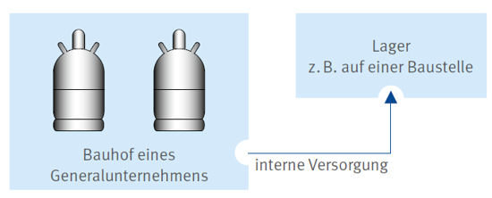
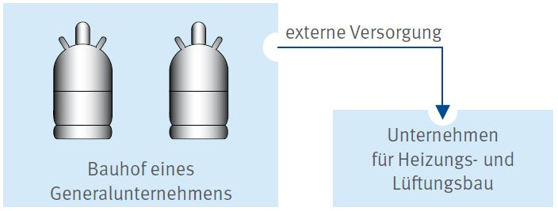
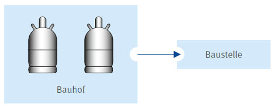
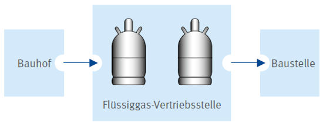

Der Umfang der anzuwendenden Vorschriften des ADR hängt von
Alle im Stoffverzeichnis des ADR aufgeführten Stoffe sind bestimmten Beförderungskategorien zugeordnet. Für jede Beförderungskategorie ist eine Mengenbegrenzung je Beförderungseinheit angegeben (ADR 1.1.3.6.3). Wird diese Menge nicht überschritten, kann eine Freistellung von bestimmten Vorschriften des ADR in Anspruch genommen werden.
Flüssiggas in Flaschen ist der Beförderungskategorie 2 zugeordnet. Für diese Kategorie ist der Tabelle in ADR 1.1.3.6.3 die höchstzulässige Mengenzahl von 333 je Fahrzeug zu entnehmen. Die Zahl 333 entspricht bei verflüssigten Gasen wie Flüssiggas der abgefüllten Menge des Stoffes in kg. Das Gewicht der Flüssiggasflasche (Tara) wird also nicht berücksichtigt.
Bei der Ermittlung des berechneten Wertes können restentleerte Flüssiggasflaschen unberücksichtigt bleiben.
Wird ausschließlich Flüssiggas z. B. in Gasflaschen befördert, gilt es bis zu einer Menge von 333 kg je Fahrzeug als Kleinmenge. Kleinmengen sind von einigen Vorschriften des ADR freigestellt.
Werden mehr als 333 kg Flüssiggas befördert, sind alle für Flüssiggas anwendbaren Vorschriften des ADR einzuhalten.
Werden mehrere Gefahrgüter unterschiedlicher Beförderungskategorien befördert, ist als Mengenkriterium die so genannte Summe des berechneten Wertes zu berechnen (ADR 1.1.3.6.4). Die Berechnung des Wertes erfolgt durch Multiplikation der jeweiligen Menge des Gefahrgutes mit dem Faktor, der seiner Beförderungskategorie zugewiesen ist. Die nachfolgende Tabelle gibt für jede Beförderungskategorie den Faktor an.
| Beförderungskategorie | Faktor |
| 1 | 50 |
| 2 | 3 |
| 3 | 1 |
Überschreitet die Summe des berechneten Wertes 1000, sind alle auf die Gefahrgüter anwendbaren Vorschriften des ADR einzuhalten. Bis zu einem berechneten Wert von 1000 gilt das beförderte Gefahrgut als Kleinmenge. Nach ADR 1.1.3.6 ist die Beförderung von einigen Vorschriften freigestellt (z. B. hinsichtlich der schriftlichen Weisungen, Schulung des Fahrerzeugführers oder Kennzeichnung und Ausrüstung des Fahrzeugs). Es ist zu beachten, dass z. B. eine Unterweisung nach ADR 1.3 und das Mitführen eines Feuerlöschers mit mindestens 2 kg Füllmenge dennoch erforderlich sind. Sofern die Freistellungsregelungen nach ADR 1.1.3.1. c oder die Ausnahme 18 der GGAV nicht angewendet werden, ist die Einhaltung der Mengengrenze mit einem berechneten Wert von 1000 anhand eines Beförderungspapieres (z. B. Lieferschein) zu dokumentieren.
Werden die Gefahrgüter im Rahmen der Haupttätigkeit befördert, können noch weitere Erleichterungen in Anspruch genommen werden. Näheres wird in 5.2.1 beschrieben.
Diese Anforderungen zielen darauf ab, die unzulässige Erwärmung und das Austreten von Flüssiggas zu verhindern. Aufgrund des in Abschnitt 3 dieser DGUV Information beschriebenen Gefährdungspotentials von Flüssiggas sind diese Anforderungen bei jeder Beförderung einzuhalten.
Beispiele:
| Stoff | UN-Nr. | Beförderungskategorie | ||
| 1 | 2 | 3 | ||
| Propan | 1965 | 2 x 11 kg | ||
| Benzin | 1203 | 50 l | ||
| Dieselkraftstoff | 1202 | 20 l | ||
| Zu befördernde Menge | 0 | 72 | 20 | |
| Faktor | 50 | 3 | 1 | |
| Berechneter Wert pro Beförderungskategorie | 0 | 216 | 20 | |
| Summe der Werte | 236 | |||
Der berechnete Wert von 236 ist nicht größer als 1000. Es handelt sich um eine Kleinmenge. Daher müssen einige Vorschriften des ADR nicht angewendet werden.
| Stoff | UN-Nr. | Beförderungskategorie | ||
| 1 | 2 | 3 | ||
| Propan | 1965 | 28 x 11 kg | ||
| Acetylen | 1001 | 6 x 8 kg | ||
| Batterien (Akkumulatoren), nass, gefüllt mit Säure | 2794 | 6 x 15 kg | ||
| Batterieflüssigkeit, sauer | 2796 | 5 l | ||
| Zu befördernde Menge | 0 | 361 | 90 | |
| Faktor | 50 | 3 | 1 | |
| Berechneter Wert pro Beförderungskategorie | 0 | 1083 | 90 | |
| Summe der Werte | 1173 | |||
Der berechnete Wert von 1173 ist höher als 1000. Es handelt sich nicht um eine Kleinmenge. Daher können keine mengenabhängigen Freistellungen von den Vorschriften des ADR in Anspruch genommen werden.
5.2.1 Beförderung von Kleinmengen in Verbindung mit der Haupttätigkeit ("Handwerkerregel")
Beförderungen von Kleinmengen in Verbindung mit der Haupttätigkeit eines Unternehmens wie z. B.:
sind von den Vorschriften des ADR freigestellt, sofern 450 Liter je Verpackung und die höchstzulässigen Mengen gemäß ADR Unterabschnitt 1.1.3.6 nicht überschritten werden. Bei der Beförderung von Flüssiggas, handelt es sich bis zu einer Menge von 333 kg, bei der gemischten Beförderung mit weiteren Gefahrgütern bis zu einem berechneten Wert von 1000 um eine Kleinmenge.
Auch wenn die Beförderung von Kleinmengen im Rahmen der Haupttätigkeit von den weiteren Vorschriften des ADR freigestellt ist, sind die Mindestanforderungen zu erfüllen, um unter normalen Beförderungsbedingungen ein Freiwerden des Inhalts der Verpackungen zu verhindern (ADR 1.1.3.1 c). Siehe hierzu Abschnitt 4.2 dieser DGUV Information.
Aber:
Das ADR grenzt die Beförderung im Rahmen der Haupttätigkeit von Beförderungen zur internen bzw. externen Versorgung ab. Letztere sind nicht von den Vorschriften des ADR freigestellt. Für Beförderungen, die z. B. zur Versorgung mehrerer Baustellen, zum Auffüllen oder Ausgleichen von Lagerbeständen oder Bereitstellung oder Versorgung anderer Unternehmen dienen, können die Freistellungen der "Handwerkerregelung" daher nicht in Anspruch genommen werden. Auf den Folgeseiten sind je zwei Beispiele zur Beförderung zur internen bzw. externen Versorgung sowie zu Beförderungen in Verbindung mit der Haupttätigkeit aufgeführt.
Beispiele
A. Beförderungen zur internen bzw. externen Versorgung von Unternehmen:
Beispiel 1:
Ein Generalunternehmen befördert zwei 11 kg-Flüssiggasflaschen vom eigenen Bauhof zum eigenen Lager.

Es handelt sich um eine Beförderung zur internen Versorgung gemäß ADR 1.1.3.1 c, bei der die Höchstmenge gemäß ADR 1.1.3.6 eingehalten ist.
Fazit:
Freistellung nur von einigen Vorschriften des ADR ausschließlich aufgrund der Kleinmengenregelung gemäß 1.1.3.6 ADR. Siehe dazu Abschnitt 7 dieser DGUV Information.
Beispiel 2:
Ein Generalunternehmen befördert zwei 11 kg-Flüssiggasflaschen vom eigenen Bauhof zu einem Nachunternehmen für Heizungs- und Lüftungsbau.

Es handelt sich um eine Beförderung zur externen Versorgung gemäß ADR 1.1.3.1 c, bei der die Höchstmenge gemäß ADR 1.1.3.6 eingehalten ist.
Fazit:
Freistellung nur von einigen Vorschriften des ADR ausschließlich aufgrund der Kleinmengenregelung gemäß 1.1.3.6 ADR. Siehe dazu Abschnitt 7 dieser DGUV Information.
B. Beförderung in Verbindung mit der Haupttätigkeit des Unternehmens:
Beispiel 1:
Ein Dachdeckerbetrieb befördert zwei 11 kg-Flüssiggasflaschen vom eigenen Bauhof zur eigenen Baustelle zur sofortigen Verwendung.

Es handelt sich um eine Beförderung zur Lieferung für Baustellen in Verbindung mit der Haupttätigkeit gemäß ADR 1.1.3.1 c, bei der die Höchstmenge gemäß ADR 1.1.3.6 eingehalten ist.
Fazit:
Freistellung vom ADR. Jedoch sind Mindestanforderungen einzuhalten. Siehe Abschnitt 4.2 dieser DGUV Information.
Beispiel 2:
Auf dem Weg zur Baustelle holt eine Dachdeckerin bzw. ein Dachdecker bei einer Flüssiggas-Vertriebsstelle zwei 11 kg-Flüssiggasflaschen und befördert diese zur Baustelle zur sofortigen Verwendung.

Es handelt sich um eine Beförderung zur Lieferung für Baustellen in Verbindung mit der Haupttätigkeit gemäß ADR 1.1.3.1 c), bei der die begrenzten Mengen gemäß ADR 1.1.3.6 eingehalten sind.
Fazit:
Freistellung vom ADR. Jedoch sind Mindestanforderungen einzuhalten. Siehe Abschnitt 4.2 dieser DGUV Information.
5.2.2 Freistellung bei der Beförderung von Maschinen
Die Regelung zur Freistellung von den Vorschriften des ADR bei der Beförderung von Maschinen und Geräten, die in ihrem inneren Aufbau oder in Funktionselementen gefährliche Güter enthalten, ist nur noch anzuwenden bis Ende 2022.
Beispiele:
5.2.3 Freistellungen in Zusammenhang mit der Beförderung von Gasen
Die Beförderung von Gasen, die in Behältern von Fahrzeugen enthalten sind, mit denen eine Beförderung durchgeführt wird, und die für deren Antrieb oder den Betrieb einer ihrer Einrichtungen dienen, ist von den Vorschriften des ADR freigestellt.
Beispiele:
Ebenso ist die Beförderung von Gasen in besonderen Einrichtungen von Fahrzeugen freigestellt, wenn die Gase für den Betrieb dieser Einrichtungen während der Beförderung erforderlich sind. Unter diese Freistellung fallen Ersatzgefäße solcher Einrichtungen und entleerte Tauschgefäße, die in derselben Beförderungseinheit befördert werden.
Beispiele:
Die RSEB ist in Nummer 1-8 (zu 1.1.3.2 e)) um folgenden Satz ergänzt worden:
Die Freistellung in Buchstabe e gilt auch
Der Begriff "während der Beförderung" im Sinne des Buchstaben e setzt nicht voraus, dass die gasbetriebenen Einrichtungen fortlaufend während der Ortsveränderung im Einsatz sind. Sie können auch mitgeführt werden, um während eines zeitweiligen Aufenthalts im Fahrzeug Verwendung zu finden. Solche Einrichtungen sind u. a. Grilleinrichtungen von Fahrzeugen, die an wechselnden Orten zur Zubereitung von Lebensmitteln verwendet werden.
Das bedeutet, dass die gewerblich genutzten Flüssiggasanlagen nicht während der Beförderung betrieben werden müssen, um unter diese Freistellung zu fallen. Das Druckregelgerät oder die Hochdruckschlauchleitung darf während der Beförderung angeschraubt bleiben. Das Flaschenventil muss vor jeder Fahrt geschlossen werden. Bei Wiederinbetriebnahme der Flüssiggasanlage ist die Dichtheitskontrolle durchzuführen.
Für die transportierte Flüssiggasmenge und deren Aufbewahrung während des Transportes gelten die gesetzlichen Regelungen (z. B. DGUV Vorschrift 79 "Verwendung von Flüssiggas").